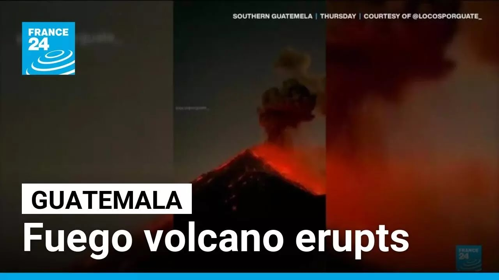

【危地马拉富埃戈火山喷发后居民被迫逃离家园 • FRANCE 24 英文频道】
Summary: Lava erupts from Guatemala's Fuego volcano, forcing evacuations and closures amid heightened volcanic activity. Authorities warn of prolonged eruptions and rising evacuee numbers, recalling past deadly disasters.
摘要： 危地马拉富埃戈火山喷发熔岩，迫使人员疏散和设施关闭。当局警告火山活动可能持续，撤离人数或增加，并提及过去的致命灾难。

⏱️ Estimated Reading Time: 1 min
📚 高考3500生词 📚 托福生词 📚 GRE生词 📚 UP主推荐生词
Lava spews from the Vulcan del Fuego in Guatemala.
危地马拉的富埃戈火山喷出熔岩。
Authorities said on Thursday they were evacuating more than 500 people after gas and ash spilled from Central America's most active volcano.
当局周四表示，在中美洲最活跃的火山喷发气体和火山灰后，他们正在疏散500多人。
At midnight, the sound of the volcano got louder and louder just like seven years ago.
午夜时分，火山的声音越来越大，就像七年前一样。
Honestly, it was very strong and I felt that this time it was stronger and the volcano rumbled even louder.
说实话，这次非常强烈，我感觉比上次更强，火山的轰鸣声也更响。
Authorities also closed a highway and dozens of schools temporarily.
当局还暂时关闭了一条高速公路和数十所学校。
Weather experts in the country say the volcanic activity could last for 40 hours with the number of evacuees also expected to rise.
该国气象专家表示，火山活动可能持续40小时，撤离人数预计也会增加。
The 3,763 m volcano has seen several mass evacuations in recent years from its eruptions.
这座3763米高的火山近年来因喷发已多次引发大规模疏散。
Here in El Porier, approximately 75 people are already in shelters.
在埃尔波里尔，大约75人已经在避难所。
In Alto Denango, there are people who don't want to go.
在阿尔托德南戈，有些人不愿离开。
So, we've made them aware that in any case of a risky situation, they will have to be evacuated.
因此，我们已让他们意识到，一旦出现危险情况，他们必须撤离。
In 2018, 215 people were killed and more than 200 went missing when a river of lava poured down the volcano's slopes, devastating a nearby village.
2018年，熔岩流下火山坡，造成215人死亡，200多人失踪，并摧毁了附近一个村庄。